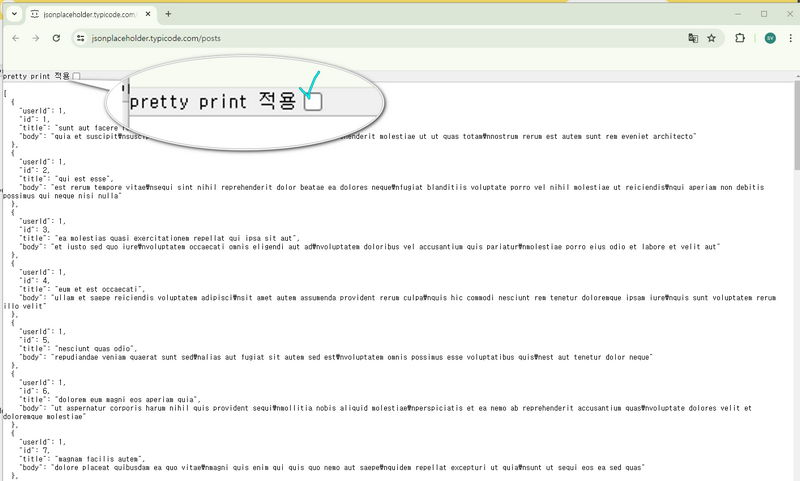
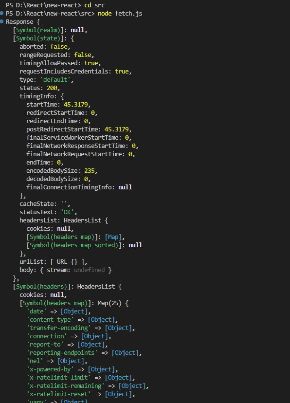
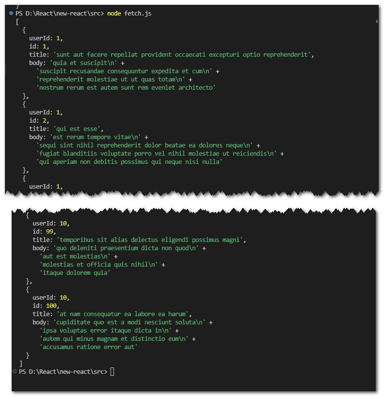

#
레시피앱-7-API활용
#
목차
1. 시작파일 2. 연관링크 3. fetch 3.1. fetch 함수 간단맛보기 3.2. 앱에 fetch 적용해보기
4. API 사용해 보기** 5. API 문서 6. Axios설치 6.1. 레시피데이터 받아오기
7. 레시피 데이터 화면에 그리기 7.1. 객체에 있는 키에 조금 더 똑똑하게 접근하기 7.2. 데이터 저장하기 7.3. 필요한 데이터만 추출하여 업데이트 하자
8. 완료파일 내려받기
#
1. 시작파일
만약 이전 파일이 없을 경우 아래의 파일을 다운로드 하여 진행한다
시작 파일
- 다운로드 받은 start.zip 파일의 압축을 푼다
- 새 리액트 앱을 설치한다. 리액트 앱 설치를 모를경우 아래 링크를 참고한다.
- 리액트 앱의 설치가 왼료 되었으면 1번의 파일압축을 푼다
- 압축을 풀게 되면 start/src 폴더가 있다.
- 2번의 src폴더에 4번의 src 폴더를 덮어 씌운다.

- 2번의 폴더를 루트로 선택하여 vscode를 연다.
- vscode 의 터미널에
npm start를 입력하여 앱을 실행한다.
#
2. 연관링크
#
3. fetch
fetch()
fetch 함수는 웹에서 데이터를 요청하고 받아오는 자바스크립트 기능이다.
간단하게는 fetch('주소')를 사용해 데이터를 요청하고, .then()을 통해 받은 데이터를 처리한다
우리의 레시피 앱은 자바스크립트의 fetch() 함수를 사용하는것이 정석이긴 하지만 어려우므로 axios 라이브러리를 사용해서 제작 할 것이다.
하지만 fetch 를 전혀 모르면 안되므로 기본적인 문법은 알아보도록 하자
#
3.1. fetch 함수 간단맛보기
- 🔗더미데이터 사이트 로 이동한다.
- json 데이터를 확인한다. 데이터의 가독성이 안 좋을 경우 이미지의 표시된 부분을 클릭한다.

- vscode 에서 fatch.js 파일을 생성후 코드를 작성한다.
src/fetch.js
let response = fetch('https://jsonplaceholder.typicode.com/posts').then((res) => { console.log(res); });
promise 함수를 사용해서 반환되는 함수들은 then을 통해서 호출할수 있다.
- 콘솔확인

- fetch 를 통해 반환되는 값은 우리가 원하는 결과값이 아닌 성공객체 자체 를 반환하므로 우리가 원하는 형태와 다르다.
편지를 보내고 답장을 받을때 봉투에 담겨 있는것과 같다 - 봉투안의 편지를 꺼내듯 데이터 꺼내어 출력 해야 한다.
async await 는 then을 간결히 작성할수 있게한다src/fetch.jsasync function getData() { let rawResponse = await fetch('https://jsonplaceholder.typicode.com/posts'); let jsonResponse = await rawResponse.json(); console.log(jsonResponse); } getData();
#
3.2. 앱에 fetch 적용해보기
- 이번에는 우리의 앱에 실제 네트워크 통신이 되는 데이터를 연결해보자
src 폴더에 fetch.js 파일에 fetchDb 모듈을 추가하고 내용을 아래와 같이 작성한다.fetch.jsexport const fetchDb = async () => { try { let res = await fetch('https://jsonplaceholder.typicode.com/posts'); let db = await res.json(); return db; } catch (error) { console.error(error); } }; - App.js 에 fetchDb 를 임포트한다
import { useState, useEffect } from 'react';
import { fetchDb } from './fetch';
function App() {
const [loading, setLoading] = useState({ state: true, data: [] });
useEffect(() => {
const loadDB = async () => {
const data = await fetchDb();
setLoading({ state: false, data: data });
};
setTimeout(() => {
loadDB();
}, 500);
}, []);
//console.log(loading.data);
return (
<div className='App'>
{loading.state ? (
<h1>로딩중입니다...</h1>
) : (
loading.data.map((a) => (
<div key={a.id}>
<span style=red>{a.title}</span>
<span>{a.userId}</span>
</div>
))
)}
</div>
);
}
export default App;
- useEffect 훅이 컴포넌트가 마운트될 때 실행
- setTimeout이 지연 시간 이후 loadData 함수를 비동기적으로 호출
- loadData 함수 내에서 fetchDb를 호출하여 데이터를 가져온 후, setLoading을 사용하여 상태를 업데이트함
- loading.state가 false로 변경되면, 로딩 메시지 대신 가져온 데이터를 렌더링함
#
4. API 사용해 보기**
- 아래의 사이트에 회원가입을 한다
데이터활용서비스 - 화면상단 공공데이터 활용 클릭
- 검색창에 레시피 입력

- 인증키발급신청
#
5. API 문서
#
6. Axios설치
Axios란 브라우저와 Node.js 환경에서 사용할 수 있는 비동기 HTTP 통신 라이브러리. Axios를 사용하면 HTTP 요청을 쉽게 보내고 응답을 처리할 수 있으며, Promise API를 기반으로 비동기 작업을 용이하게 한다. Axios는 GET, POST, PUT, DELETE 등의 HTTP 메서드를 모두 지원하며, 요청과 응답을 JSON 형태로 자동 변환해준다.
- axios 설치하기
npm i axios
npm start- 데이터 API 살펴보기
API는 특정 주소(Endpoint라고 적힌 곳의 주소 참고)를 입력하면 그 주소에 맞는 결과를 보내준다.
https://www.foodsafetykorea.go.kr/api/newDatasetDetail.do
기본주소 뒤에 원하는 데이터를 요청인자표를 보고 파라미터로 전달하면 원하는 데이터를 골라서 받을수 있디
- 데이터 확인해보기
정말 그런지 API를 바로 사용해 보자.

http://openapi.foodsafetykorea.go.kr/api/인증키/서비스명/요청파일타입/요청시작위치/요청종료위치
http://openapi.foodsafetykorea.go.kr/api/08cc9b42270a4439b1b5/COOKRCP01/json/1/100
https://www.foodsafetykorea.go.kr/api/newDatasetDetail.do
상단링크의 api 문서를 확인하여 필요한 정보만 추출해보자
#
6.1. 레시피데이터 받아오기
- 서버에서 제공하는 데이터를 받아오는 작업은 컴포넌트를 렌더링 하는 작업에 비해 시간이 오래 걸린다.
그러므로 비동기함수 내부에 axio를 작성하여 통신완료시 까지 기다린후 결과를 반환하도록 한다. - 데이터를 받아오는 함수 getDB 를 선언하고 비동기 함수 async를 할당한다.
- try~catch 문 으로 예외처리를 작성한다.
const getDB = async () => { try { //예외발생할 가능성이 있는 문장 } catch (error) { //예외상황 발생시 실행문 } }; - try 문 내에 통신요청과 통신성공시의 응답데이터를 저장하는 문장을 작성한다
const getDB = async () => { try { const DB = await axios.get('http://openapi.foodsafetykorea.go.kr/api/08cc9b42270a4439b1b5/COOKRCP01/json/1/100'); console.log(DB); // 응답 데이터 확인. } catch (error) { console.error('데이터를 불러오는데 실패했습니다.', error); } }; //useEffect로 컴포넌트 마운트시 getDB함수를 호출한다. useEffect(() => { getDB(); }, []); - 콘솔메시지로 반환값을 확인해보자.
통신결과 서버에서 전달하고 있는 다양한 데이터가 확인된다
이중 data 키에 우리가 원하는 레시피데이터가 반환된것이 보인다.

- DB 변수에 저장된 여러 하위키중 data에 접근하려면 . ****표기법을 사용한다.
console.log(DB.data);`
#
7. 레시피 데이터 화면에 그리기
#
7.1. 객체에 있는 키에 조금 더 똑똑하게 접근하기
- 통신요청후 구조분해할당을 사용하여 data 키에 결과를 객체로(서버의 데이터 구조가 객체이다) 받는다콘솔메시지를 확인하면 이전과 같이 출력된다
const getDB = async () => { try { const { data } = await axios.get('http://openapi.foodsafetykorea.go.kr/api/08cc9b42270a4439b1b5/COOKRCP01/json/1/100'); console.log(data); // 응답 데이터 확인. } catch (error) { console.error('데이터를 불러오는데 실패했습니다.', error); } };
#
7.2. 데이터 저장하기
- 저장된 데이터를 setState 함수에 전달하여 컴포넌트의 상태를 업데이트 한다
function App() { const [loading, setLoading] = useState({ state: true, data: [] }); const getDB = async () => { try { const {data} = await axios.get('http://openapi.foodsafetykorea.go.kr/api/08cc9b42270a4439b1b5/COOKRCP01/json/1/100'); console.log(data); // 응답 데이터 확인. setLoading({ state: false, data: data.COOKRCP01.row }); // 로딩 상태와 data 업데이트 } catch (error) { console.error('데이터를 불러오는데 실패했습니다.', error); } }; useEffect(() => { getDB(); }, []); ... - data 를 한번더 분해해서 row키의 데이터만 추출하면 더욱 간결한 코드를 구현할수 있다.
... try { const { data } = await axios.get('http://openapi.foodsafetykorea.go.kr/api/08cc9b42270a4439b1b5/COOKRCP01/json/1/100'); const { COOKRCP01: { row } } = data; setLoading({ state: false, data: row }); } catch (error) { console.error('데이터를 불러오는데 실패했습니다.', error); } }; ...
#
7.3. 필요한 데이터만 추출하여 업데이트 하자
- 저장된 데이터의 구조를 살펴보고 구조에 맞게 하위키를 작성하여 컴포넌트에 렌더링 시켜보자
console.log(DB.data); // 응답 데이터 확인.
setLoading({ state: false, data: DB.data.COOKRCP01.row }); // 로딩 상태와 data 업데이트
...
loading.data.map((a) => (
<div key={a.RCP_SEQ}>
<span style=red>{a.RCP_NM}</span>
<span>{a.RCP_WAY2}</span>
</div>
- 앱을 실행해 보면 처음에는 isLoading... 이 화면에 나타나다가, 데이터가 화면에 렌더되는것을 볼수있다
주의) 가끔 API가 오작동하며 axios.get()이 제대로 실행되지 않을 수도 있다. 그런 경우에는 1~2분 정도 기다렸다가 다시 리액트 앱을 실행해 보자.